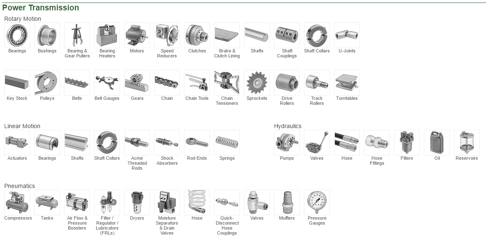
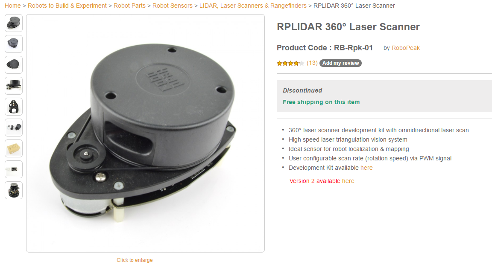
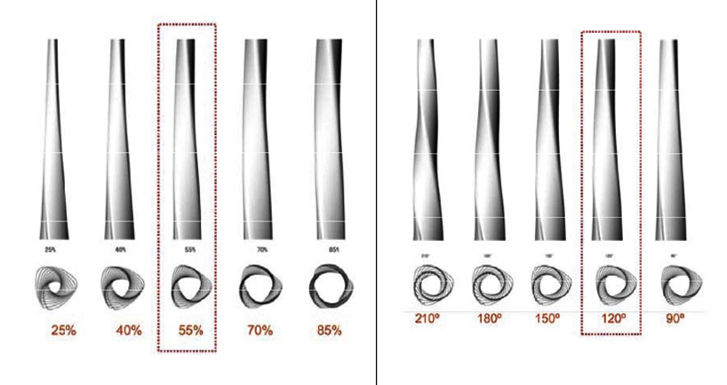
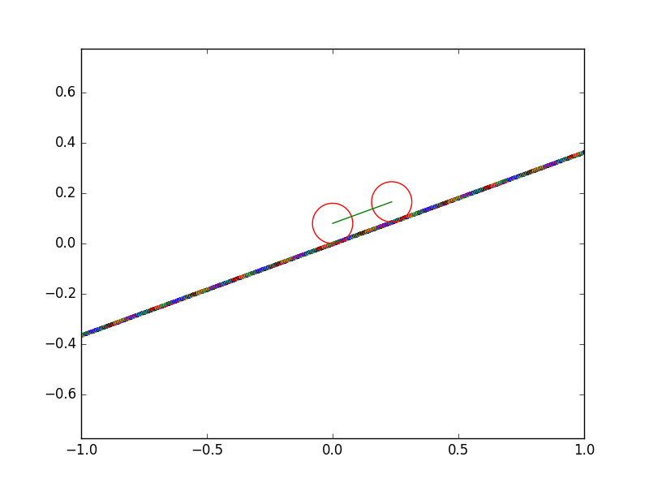

Common Strategy: Start with components, with accurate data
Challenge: How do we get that data?
Does this work?
Eh, mostly ¯\_(ツ)_/¯
So what now?
We have a bunch of numerical data...
Common Strategy: Manually design for extrema, use computers to explore between
Problem: I want a robot army
Agent based design!
